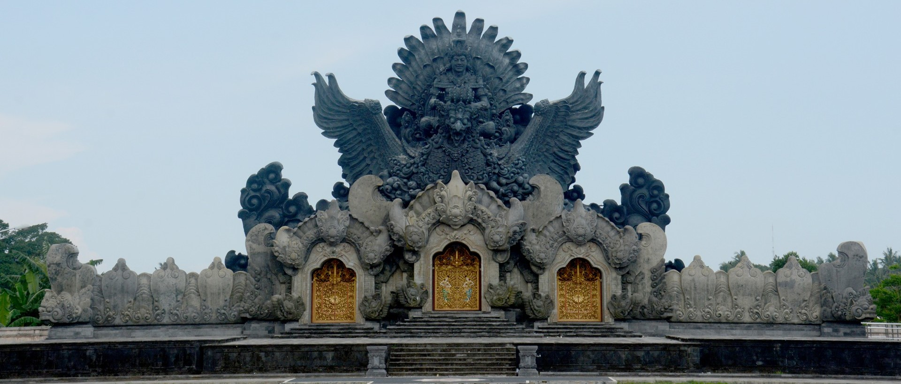
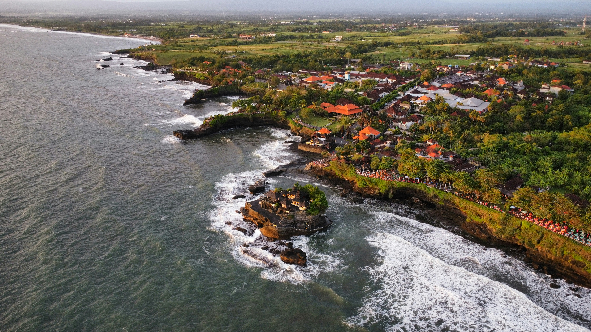
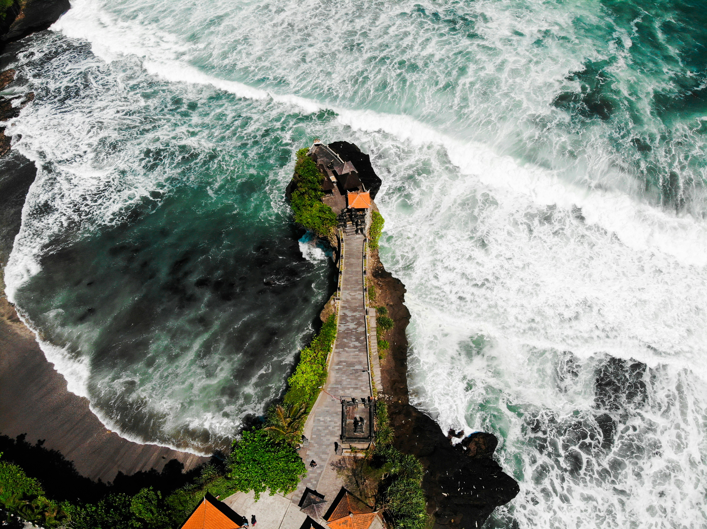
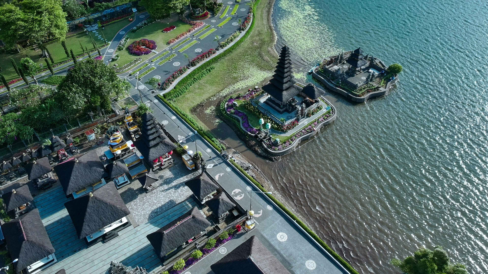
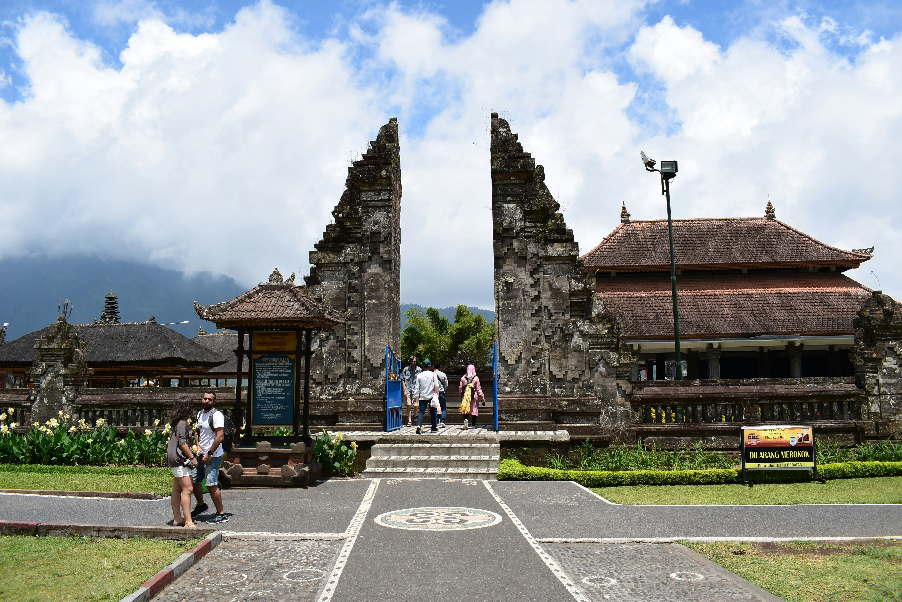

Kota agraris nan hijau di selatan Bali, tempat alam, dan budaya bertemu dalam harmoni
Profil Singkat

Data April 2025
Kabupaten Tabanan merupakan salah satu kabupaten di Provinsi Bali yang dikenal dengan komitmennya terhadap pembangunan berkelanjutan dan pelestarian budaya lokal.
Pemerintah daerah saat ini, di bawah kepemimpinan Bupati Komang Gede Sanjaya, mengusung visi “Tabanan Era Baru, Aman, Unggul, Madani (AUM)” sebagai arah pembangunan hingga tahun 2030.
Sebagai penjaga nilai budaya Bali yang kaya, Tabanan juga aktif dalam pelestarian seni, adat, dan tradisi lokal.
Pemerintah memberi ruang luas bagi komunitas budaya dan generasi muda untuk terlibat dalam kegiatan seni dan budaya sebagai bagian dari identitas daerah.
Dengan memadukan nilai-nilai tradisional dan pendekatan modern, Tabanan tumbuh sebagai kabupaten yang humanis, berdaya saing, dan adaptif terhadap perubahan zaman—menjadikannya sebagai salah satu wajah baru pembangunan Bali yang inklusif dan berkelanjutan.
Geografi kota
Data April 2025
Kabupaten Tabanan merupakan salah satu wilayah strategis di Provinsi Bali yang memiliki karakter geografis yang sangat beragam.
Wilayah ini mencakup area pesisir di selatan, dataran rendah, perbukitan, hingga kawasan pegunungan di utara, menjadikan Tabanan kaya akan sumber daya alam dan keanekaragaman hayati.
Letaknya yang berada di bagian barat daya Pulau Bali menjadikan Tabanan sebagai jalur penghubung antara daerah pusat dan barat Bali.
Keberadaan Gunung Batukaru di wilayah utara serta sistem irigasi tradisional subak yang tersebar luas menunjukkan bahwa kondisi geografis Tabanan sangat berperan dalam pembentukan budaya, sistem pertanian, dan tata ruang wilayahnya.
Letak Geografis
Terletak di bagian barat daya Pulau Bali
Koordinat: 8°14′–8°30′ Lintang Selatan dan 114°54′–115°13′ Bujur Timur
Batas Wilayah
Utara: Kabupaten Buleleng
Timur: Kabupaten Badung
Selatan: Samudera Hindia
Barat: Kabupaten Jembrana
Luas Wilayah
Total luas: ±839,33 km² (sekitar 14,9% dari total luas Bali)
TKabupaten terluas ketiga di Bali setelah Buleleng dan Karangasem
Topografi
Dataran rendah di wilayah selatan
Perbukitan dan pegunungan di wilayah tengah dan utara
Titik tertinggi: Gunung Batukaru (2.276 mdpl)
Ciri khas: Terasering sawah (subak), termasuk kawasan Jatiluwih
Hidrologi
Banyak sungai yang mengalir sepanjang tahun
Sungai utama: Yeh Ho, Yeh Sungi, Yeh Empas, Yeh Penet
Mendukung sistem irigasi pertanian tradisional
Garis Pantai
Panjang garis pantai ±35 km
Membentang dari Pantai Nyanyi (Kecamatan Kediri) hingga Pantai Selabih (Kecamatan Selemadeg Barat)
Ciri khas: pantai pasir hitam dan tebing vulkanik
Iklim
Iklim tropis basah
Dua musim utama: musim hujan (Okt–Mar) dan musim kemarau (Apr–Sep)
Curah hujan tahunan: 2.000 – 3.500 mm
Suhu rata-rata: ±27,6°C (lebih dingin di dataran tinggi)
Lokasi di Peta
Demografi Kota
Data April 2025
Kabupaten Tabanan merupakan salah satu daerah dengan jumlah penduduk yang cukup besar di Provinsi Bali. Komposisi penduduknya mencerminkan keseimbangan antara pertumbuhan penduduk, tingkat pendidikan, dan struktur usia yang beragam.
Kehidupan sosial masyarakat Tabanan masih sangat dipengaruhi oleh nilai-nilai budaya dan adat istiadat Bali, yang menjadi ciri khas kehidupan sehari-hari masyarakat di berbagai desa dan banjar.
Penduduk Tabanan sebagian besar bermata pencaharian di sektor pertanian, namun dalam beberapa tahun terakhir mulai terjadi pergeseran menuju sektor jasa dan ekonomi kreatif, terutama di kalangan generasi muda.
Jumlah Penduduk
Total penduduk per pertengahan 2024: ±478.390 jiwa
Tersebar di 10 kecamatan dan 133 desa/kelurahan
Kepadatan Penduduk
Rata-rata kepadatan: ±513 jiwa/km²
Kepadatan tertinggi berada di wilayah Tabanan kota dan sekitarnya
Struktur Usia
Usia produktif (15–64 tahun): sekitar 67% dari total penduduk
Usia non-produktif (anak-anak dan lansia): ±33%
Menunjukkan potensi bonus demografi dalam pembangunan daerah
Pendidikan
Tingkat pendidikan masyarakat secara umum cukup baik
Tidak/Belum sekolah: ±20,68%
Tamat SD: ±23,35%
SMP: ±11,99%
SMA: ±29,49% (tertinggi)
Diploma & Sarjana: ±8% gabungan (S1, D3, D2, D1)
Pascasarjana (S2 & S3): <1%
Pekerjaan dan Mata Pencaharian
Mayoritas bekerja di sektor pertanian, khususnya pertanian padi dan hortikultura
Sektor lain: perdagangan, jasa, UMKM, pariwisata, dan pegawai negeri
Tren peningkatan minat generasi muda di sektor kreatif dan digital
Komposisi Gender
Laki-laki dan perempuan hampir seimbang
Rasio jenis kelamin: ±100,2 (per 100 perempuan terdapat sekitar 100 laki-laki)
Kehidupan Sosial dan Budaya
Masyarakat sangat menjunjung tinggi nilai adat, gotong royong, dan sistem banjar
Struktur sosial masih sangat terikat pada adat dan desa pekraman (desa adat Bali)
Tempat Wisata
Kabupaten Tabanan merupakan salah satu destinasi unggulan di Bali yang menawarkan keindahan alam, kekayaan budaya, serta situs bersejarah yang unik.
Dijuluki sebagai “lumbung padi” Bali, Tabanan tidak hanya terkenal karena persawahannya yang hijau, tetapi juga karena daya tarik wisata alamnya yang luar biasa mulai dari gunung, pantai, air terjun, hingga pura bersejarah.
Keaslian alam dan budaya lokal menjadi kekuatan utama pariwisata Tabanan yang banyak diminati wisatawan domestik maupun mancanegara.
Wisata berbasis alam, budaya, spiritual, dan petualangan menjadi andalan sektor pariwisata di daerah ini.
Tanah Lot


Data April 2025
Pura Tanah Lot merupakan permata ikonik Kabupaten Tabanan yang tak hanya dikenal di Bali, tetapi juga mendunia. Terletak di atas bongkahan batu karang besar di tengah laut, Tanah Lot menyuguhkan panorama dramatis, terutama saat matahari terbenam yang memancarkan cahaya keemasan di balik siluet pura.
Pemandangan ini menjadi salah satu momen paling diburu oleh para fotografer dan wisatawan, karena suasananya begitu magis dan memikat. Pesona utama dari tempat ini bukan hanya keindahan alamnya, tetapi juga aura spiritual yang begitu kental—menjadikannya lokasi favorit untuk menyaksikan kebesaran alam sekaligus merasakan ketenangan batin.
Tanah Lot juga memiliki sejarah panjang sebagai tempat pemujaan Dewa Laut, yang diyakini oleh masyarakat Bali sebagai penjaga keseimbangan antara laut dan daratan.
Saat air laut pasang, pura tampak seolah mengapung, menciptakan pemandangan luar biasa yang membuat siapa pun merasa takjub dengan keajaiban alam.
Tidak hanya sebagai tempat ibadah, kawasan Tanah Lot kini telah berkembang menjadi destinasi wisata yang lengkap dengan berbagai fasilitas penunjang. Pengunjung dapat menikmati jalur pedestrian yang tertata rapi, menjelajahi deretan toko suvenir yang menjual berbagai kerajinan khas Bali, atau mencicipi hidangan lokal di restoran yang menyuguhkan panorama laut terbuka.
Tersedia pula taman-taman tropis yang dirancang untuk bersantai, serta titik-titik foto ikonik yang memperkaya pengalaman wisata. Di beberapa kesempatan tertentu, upacara adat dan persembahyangan masih rutin dilakukan di sini, memberikan kesempatan bagi wisatawan untuk menyaksikan langsung kekayaan budaya Bali yang hidup.
Tanah Lot bukan sekadar tempat wisata, tapi juga pengalaman budaya, spiritual, dan visual yang membekas dalam hati setiap pengunjungnya—menjadikannya salah satu destinasi wajib ketika berada di Bali.
Ulun Danu Beratan


Data April 2025
Pura Ulun Danu Beratan adalah salah satu ikon wisata spiritual dan alam paling menawan di Kabupaten Tabanan, terletak di tepi Danau Beratan, kawasan pegunungan Bedugul. Dengan latar belakang danau yang tenang dan perbukitan berselimut kabut, pura ini seakan melayang di atas air, menciptakan suasana magis yang memukau setiap mata yang memandang.
Dikenal sebagai tempat suci pemujaan Dewi Danu, dewi air dan kesuburan, Ulun Danu Beratan tidak hanya menjadi destinasi wisata favorit, tetapi juga pusat spiritual penting bagi masyarakat Bali.
Keindahan arsitektur pura yang berpadu dengan refleksi air dan kesejukan alam pegunungan menjadikan tempat ini sangat fotogenik dan menenangkan jiwa.
Suhu yang sejuk, taman-taman bunga yang tertata rapi, serta keberadaan aktivitas wisata seperti naik perahu atau sekadar bersantai menikmati suasana alam menjadikan Ulun Danu Beratan sebagai tempat liburan sempurna bagi siapa saja yang ingin menyatu dengan keindahan alam dan budaya Bali.
Jatiluwih
Data April 2025
Jatiluwih adalah sebuah kawasan pedesaan yang terletak di Kecamatan Penebel, Kabupaten Tabanan, Bali, yang terkenal dengan keindahan sawah teraseringnya yang luar biasa.
Berada di kaki Gunung Batukaru pada ketinggian sekitar 700 meter di atas permukaan laut, Jatiluwih menawarkan pemandangan alam yang sejuk, asri, dan sangat memanjakan mata. Hamparan sawah yang membentang luas mengikuti kontur perbukitan menciptakan lanskap yang harmonis antara alam dan hasil karya manusia.
Keindahan yang disuguhkan tak hanya memikat mata, tapi juga memberikan kedamaian batin bagi siapa saja yang datang berkunjung.
Tidak hanya menjadi destinasi wisata alam, Jatiluwih juga memiliki nilai budaya tinggi karena menerapkan sistem irigasi tradisional Subak. Sistem pengairan ini merupakan warisan leluhur masyarakat Bali yang telah digunakan secara turun-temurun untuk menjaga keberlangsungan pertanian.
Uniknya, Subak tidak hanya berfungsi sebagai sistem teknis, tetapi juga mengandung filosofi hidup yang mencerminkan keharmonisan antara manusia, alam, dan spiritualitas. Karena kekayaan nilai budaya ini, Jatiluwih diakui sebagai Warisan Budaya Dunia oleh UNESCO, menjadikannya destinasi yang bukan hanya indah secara visual, tetapi juga sarat makna.
Di kawasan ini, pengunjung bisa menikmati suasana pedesaan yang otentik, berjalan kaki atau trekking menyusuri jalur sawah yang hijau dan tenang.
Di sepanjang jalur tersebut, terdapat berbagai tempat istirahat dan restoran yang menyajikan makanan lokal dengan pemandangan langsung ke lanskap sawah yang memukau. Udara yang segar, suasana yang damai, dan keramahan warga lokal menjadi pelengkap sempurna dalam perjalanan wisata ke Jatiluwih. Tempat ini merupakan pilihan ideal bagi siapa pun yang ingin menikmati keindahan alami Bali sambil menyelami kearifan lokal yang masih terjaga hingga kini.